FRONT CAMERA BEFORE STARTING ADJUSTMENT

CAUTION / NOTICE / HINT
Note
When replacing the windshield glass of a vehicle equipped with a forward recognition camera, make sure to use a Toyota genuine part. If a non-Toyota genuine part is used, the forward recognition camera may not be able to be installed due to a missing bracket. Also, the dynamic radar cruise control system, lane departure alert system, pre-crash safety system, forward recognition camera system or adaptive high beam system may not operate properly due to a difference in the transmissivity or black ceramic border.
Tech Tips
-
Purpose of Forward Recognition Camera Optical Axis Learning
-
If the installation position or orientation of the forward recognition camera is changed due to it being replaced with a new one or the windshield glass sub-assembly being replaced or removed and installed, it is necessary to perform forward recognition camera optical axis learning for the forward recognition camera to learn the driving direction of the vehicle and its horizontal axis in order for each driving support system to operate correctly.
-
Characteristics of Forward Recognition Camera
-
As the forward recognition camera recognizes targets using image processing based on differences in contrast, when performing forward recognition camera optical axis learning, if there are overhead lights, windows, reflective objects, or high contrast objects behind the target, the contrast between background objects may be detected as high and may be misrecognized as a target.
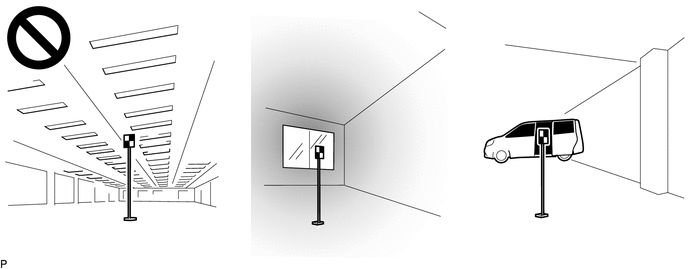
-
By blocking objects behind the target which may be misrecognized as a target, the forward recognition camera can more easily recognize the target and complete forward recognition camera optical axis learning.
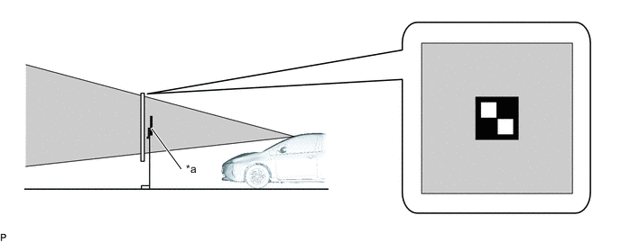
*a Target - - 
Target recognition area - - -
Forward recognition camera optical axis learning may fail if it is performed under any of the following conditions.
-
Light Shining from Behind Target (Backlit)
As the target will appear dark to the camera if the target is backlit, the contrast of the black and white parts of the target will decrease and the target may not be recognized.
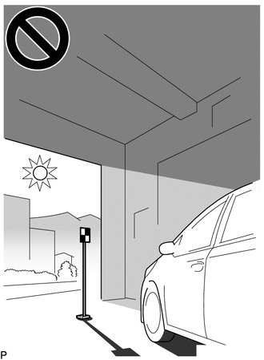
-
Target Partially Illuminated by Light from Windows
If the surface of the target is unevenly illuminated, the contrast of the black and white parts of the target will decrease and the target may not be recognized.
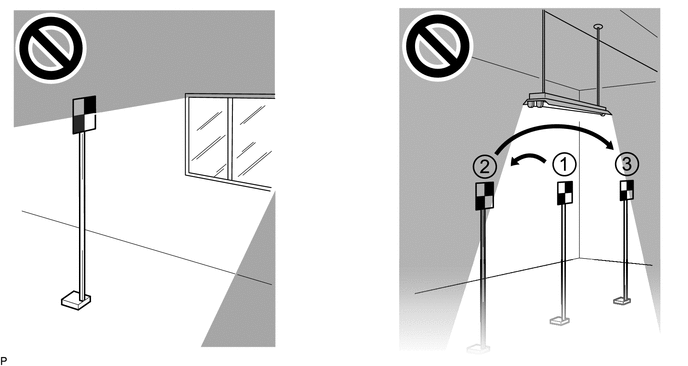
-
Entire Target not Illuminated
If the target is placed in an area that is dark, the contrast between the target and the background will decrease and the target may not be recognized.
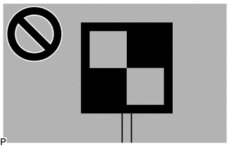
-
Shadow of Target is Cast onto Wall
Make sure that the shadow of the target is cast onto a wall as this may cause a target recognition error.
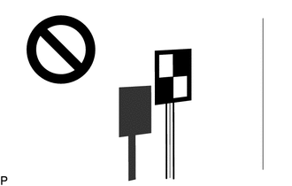
-
Reflective Object on Target Surface
If an object, such as clear adhesive tape, is attached to the target surface or if the target is laminated, the target surface will reflect light. As the reflected light will appear white to the camera, the target may not be recognized.
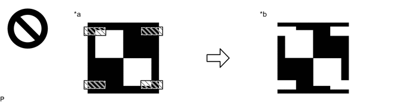
*a Actual Target *b Target as Seen by Forward Recognition Camera 
Reflective Object or Surface - - -
Border of Black and White Parts of Target are Blurry or Distorted
If the borders of the black and white parts of the target appear blurry to the camera, the detected contrast will be low and the target may not be recognized.
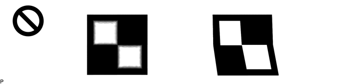
-
Target is Moving
If the target is moving, due to being blown by the wind, etc., it may not be recognized.
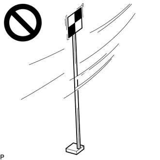
-
Target and Vehicle are not Level
If the target and vehicle are not level when learning is performed, an incorrect center of the direction of travel of the vehicle may be learned or the forward recognition camera may not be able to detect the target.
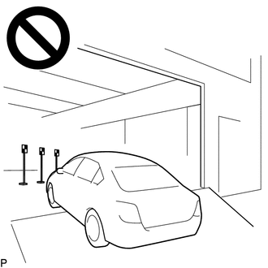
-
Recognition Method
-
Forward recognition camera optical axis learning can be performed by using Sequential Recognition.
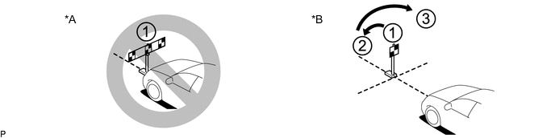
*A for One Time Recognition *B for Sequential Recognition Recognition Method Target Position Number of Times Target Recognition Performed One Time Recognition 1 (In front of front bumper) 1 Sequential Recognition 3 (3 m (9.84 ft.) from the forward recognition camera) 3 -
One Time Recognition is an optical axis learning method in which 3 targets are recognized simultaneously at 1 position directly in front of the front bumper.
-
Sequential Recognition is an optical axis learning method in which 1 target is recognized sequentially at 3 positions 3 m (9.84 ft.) from the forward recognition camera.